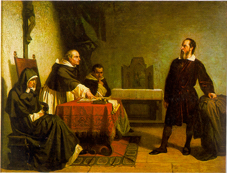
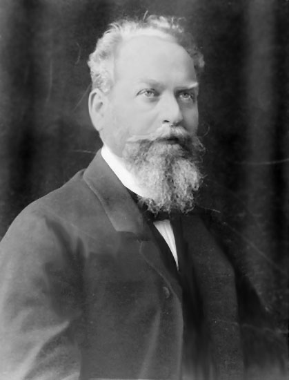

СОДЕРЖАНИЕ СТРАНИЦЫ
ГАЛИЛЕЕВСКАЯ НАУКА – ВСЕ ЖЕ ПРОТИВ ЧЕГО?
(Текст по «Я. А. Слинин Кризис европейского человечества: в чем он состоит и какие средства предлагает Эдмунд Гуссерль для его преодоления (редактор книги Кризис…, 359)»)
С чего начинала галилеевская наука? Она возникла в полемике и борьбе с господствовавшим до той поры в Европе и во всем мире религиозно-мифологическим мировоззрением. В Европе господствовало христианство; основы его мировоззрения всем известны: это непререкаемые истины Писания и Предания. Главное, против чего выступили деятели науки нового времени — это авторитет Писания и Предания. Они хотели бы исследовать природу, не опираясь на какие бы то ни было авторитеты, а непосредственно. В качестве авторитетов, претендующих на знание подлинной картины мира, могут также выступать и выступали многочисленные гностики, философы, мистики и т. п. Что противопоставила наука нового времени разного рода авторитетам? Она противопоставила им свой универсальный метод. Гуссерль в своем «Кризисе европейских наук» подробно описывает ряд основных черт научного метода.
ПРИНЦИПЫ ГАЛИЛЕЕВСКОЙ НАУКИ.
ПЕРВЫЙ ПРИНЦИП
Прежде всего в своих исследованиях ученый должен руководствоваться исключительно собственным опытом и собственным разумом. Он не обязан никому безоговорочно верить. Истина только тогда имеет право именоваться научной, когда она для ученого очевидна, когда она ему понятна. Ф. Бэкон и Р. Декарт по праву считаются одними из самых влиятельных идеологов зарождавшегося научного метода. В «Рассуждении о методе» Декарта в качестве первого правила значится правило «никогда не принимать за истинное ничего, что я не признал бы таковым с очевидностью». Ясно, что данное правило не следует понимать так, что для того, чтобы истина стала научной, достаточно, чтобы она стала очевидной и понятной для какого-нибудь одного отдельно взятого ученого. Нет, она должна быть очевидна и понятна для всех членов сообщества ученых, для любого из них. Отсюда вытекает основной принцип современной науки: принцип проверяемости научных истин. Любая истина, провозглашаемая тем или иным ученым, должна иметь возможность быть проверенной любым другим ученым. Этот принцип касается как экспериментальных, так и дедуктивных наук. Если кем-либо поставлен какой-либо эксперимент, то он должен быть поставлен так, чтобы его могли повторить другие ученые, с тем чтобы проверить его результаты. Если кем-либо установлено какое-либо новое математическое положение, то должно быть предъявлено доказательство этого положения, с тем чтобы другие математики могли его проверить.
Мой комментарий. В чем преимущества и сильная сторона Галилеевской науки? Чем сильна она морально? 1) Исследователь в принципе не один человек, а «общий человек». Это очень сильно морально, потому, что прямо толкает на необходимость осознать бессилие эгоистической истины (субъективной), ставя на ее место истину всеобщую, следовательно — объективную. Здесь очень легко спутать. Может показаться, что отрицается роль субъективного вообще. Это не так. В конце концов выходит так — новая правда впервые на основе имеющнгося коллективного опыта может предполагаться одним человеком — как результат вдохновенья, озаренья, но может и группой ученых. В любом случае она всегда должна пройти испытание на коллективность — объективность. Только эта коллективность — не все люди поголовно, а только те, которые понимают и носят в себе этот коллективный опыт. Но это не проблема — в наши дни возможности разных перекресных тестов в поисках истины множество. Тут дело скорее всего в истинной честности ученых. Но дело в принципе — именно тот факт, что правда есть правда не для узкого индивида, а для его расширенного варианта. Не забудем, что стремление к объединению является одной из самых основных проявлений истинно духовного пути. В наши дни тут все спутано — спутана необходимость субъективности, как действительно сейчас нами устанавливаемой объязательной первой фазой пути к духовному пониманию мира, и оно объявляется окончптельной ценностью. Это неправда — окончательно все происходит п проверяется в интерсубъективном мире. Далее — оспариваются писания. И опять — потому ведь оспариваются, что люди сами из — за своего эгоизма их или извратили, или ничего в них не поняли. Поэтому опять — оспариваются эгоистические взгляды. Тогда как природа ведь дает более объективные — интерсубъективные данные, и поэтому более достоверные. Вот и мой необычный комментарий — Галилеевская наука встала против эгоизма, следовательно против извращения в этике.
ВТОРОЙ ПРИНЦИП
Другим важным принципом науки является требование количественного подхода к исследованиям. Везде, где это возможно, необходимо проводить как можно более точные измерения и расчеты. Это тоже касается как дедуктивных, так и индуктивных наук. И этим вызвано то обстоятельство, что математика в большей или меньшей мере проникла в область всех экспериментальных наук: ведь результаты экспериментов должны быть, насколько это возможно, подвергнуты количественной оценке, должны быть выражены в числах и формулах. Поэтому математические методы используются и в физике, и в химии, и в биологии, и в социологии, и даже в психологии, языкознании и лингвистике.
Мой комментарий. Получается в принципе то же самое, что мы только что обсудили. Но это только закрепляет предыдущий вывод — галилеевская наука за истину — и не поросто истину как самоцель, но истину как высоко этическую и духовную ценность.
ОБЩИЙ ПРИНЦИП НАУКИ НОВОГО ВРЕМЕНИ
Итак, предметом научных исследований является то, что может быть более или менее точно измерено, причем результаты исследований должны допускать возможность проверки. Общие положения науки должны быть выражены на языке математики, в виде формул и уравнений. Таковы основные требования методологии науки нового времени.
ГДЕ НАУКА ДОПУСТИЛА ОШИБКУ?
Исходную причину кризиса европейских наук Гуссерль усматривает в том, что деятели галилеевской науки имели неосторожность свои чисто методологические требования онтологизировать. Они стали утверждать, что только то, что допускает возможность своего исследования научными методами, существует реально и объективно. Все остальное было объявлено плодом чисто субъективных и наивных человеческих мнений и верований, результатом разного рода иллюзий и ошибок. Эта точка зрения немедленно нашла отражение и в философии нового времени: возникло то, что Гуссерль в своем «Кризисе европейских наук» назвал физикалистским объективизмом.
Согласно Гуссерлю, есть сознание чистое, в существовании которого усомниться нельзя, и есть сознание эмпирическое — психика, которую экспериментальная психология изучает естественнонаучными методами. В существовании этой последней можно усомниться в силу тех же причин, в силу которых мы сомневаемся в существовании тела, с которым она теснейшим образом связана (375) … Таким образом, граница, отделяющая несомненное от сомнительного проходит не между душой и телом, а между чистым и эмпирическим сознанием, между трансцендентальным и эмпирическим субъектом.
Надо отметить, что общая структура мира интенциональных объектов существенным образом отличается от структуры природного мира трансцендентных объектов, описываемой современной наукой. Главное заключается в следующем. Космос физикалистского объективизма децентрализован, все его точки во всех отношениях равноправны. Что касается мира интенциональных объектов, то у него имеется центр: ведь это мир трансцендентального субъекта. Трансцендентальное эго и является центром окружающих его интенциональных объектов. Одни объекты расположены ближе к моему Я, другие — дальше от него, третьи — еще дальше. При этом отношение «ближе—дальше» может иметь не только пространственный смысл: одни объекты могут, например, быть мне ближе, с точки зрения моей заинтересованности в них, другие могут быть не так близки мне, с этой точки зрения. При этом мир трансцендентального субъекта не перестает быть многообразным миром, в котором открываются для его исследователей бесконечные перспективы. Поэтому феноменологию, изучающую интенциональные объекты, которые Гуссерль именует также феноменами, изучающую связи между ними и вообще всю область трансцендентального Я, он в «Картезианских размышлениях» называет эгологией (379).
Мой комментарий. Ну да, и здесь уместно напомнить о новизне моего подхода, вообще — то связанной с моим профессиональным опытом. Самым близким интенциональным предметом является наша нервная система. И только после нее — философия. Но продолжение комментария — после одного абзаца.
Изо всех окружающих мое трансцендентальное Я интенциональных объектов во всех отношениях всего ближе ко мне моя психофизическая структура. Как реальный, трансцендентный моему сознанию объект она вынесена за скобки и влачит проблематичное существование, но как объект интенциональный она существует аподиктически и в этом качестве ближе ко мне, чем остальные интенциональные объекты (380).
Мой комментарий — Ну вот — тут и все решение псевдопроблемы с возможным объединением нейро- и психофизиологии с новым, Гусерлевским подходом. Для нас важно то, что наша нервная система как была, так и остается наиважнейшей структурой, помогающей нам как теоретически понять, так и практически осуществлять обогащенный огромными новыми возможночтями путь человека к его совершенству, к идеалу — путь, который не в малейшей мере не ранит самодостоинство человека.
СПРАВЛЯЕМСЯ С СОЛИПСИЗМОМ
При исследовании мира трансцендентального субъекта перед эгологией встает одна серьезная трудность. Если ограничиться феноменологической редукцией, то быстро выясняется, что она приводит к следующему выводу: аподиктически существует всего один трансцендентальный субъект и только он. Аподиктически, несомненно для меня, существую только я сам в виде моего трансцендентального сознания с его внутренним временем, его интенциональными актами и интенциональными объектами. Понятно, что такой вывод неприемлем. Тот, кто отважился бы с ним согласиться, оказался бы на позиции, которая на философском языке зовется солипсизмом. С солипсизмом не согласен никто из философов, так как из него вытекают очевидные следствия, уничтожающие возможность всякой философии. Не согласен с ним и Гуссерль. Однако он считает, что солипсизм неизбежен как необходимый этап в постепенном развертывании феноменологической философии. Это временный солипсизм, он имеет чисто методический характер (вытекает из требований феноменологического метода), и из него есть выход. Как избавиться от солипсизма после проведения трансцендентальной (феноменологической) редукции, Гуссерль описывает в «Формальной и трансцендентальной логике» и в «Картезианских размышлениях». Изо всех окружающих мое трансцендентальное Я интенциональных объектов во всех отношениях всего ближе ко мне моя психофизическая структура. Как реальный, трансцендентный моему сознанию объект она вынесена за скобки и влачит проблематичное существование, но как объект интенциональный она существует аподиктически и в этом качестве ближе ко мне, чем остальные интенциональные объекты.
Однако, наблюдая эти более или менее далекие от меня интенциональные объекты, я замечаю, что среди них встречаются другие психофизические структуры, аналогичные, моей, но не мои. Это наблюдение вызывает во мне то, что Гуссерль называет аналогизирующей апперцепцией, или аппрезентацией: мне становится аподиктически, со всей несомненностью, ясно, что за каждой такой психофизической структурой «стоит» другой, не мой, трансцендентальный субъект, в общих чертах аналогичный моему и имеющий независимое от меня трансцендентное по отношению к моему сознанию существование. Я прихожу к аподиктическому убеждению, что окружен Другими, что существую не один, что рядом со мной существует множество таких же как я трансцендентальных субъектов. Аподиктически ясно, что я не один, и временный феноменологический солипсизм оказывается, таким образом, преодоленным. Другие трансцендентальные субъекты имеют точно такой же статус существования, что и я сам. Их существование не зависит от моего существования. Если я прекращу свое существование, то из-за этого прекратят существование и все объекты моего интенционального мира; однако Другие своего существования не прекратят из-за того, что перестал существовать я. Другие трансцендентальные субъекты трансцендентны по отношению ко мне еще и вот в каком отношении: ни один из них не дан мне непосредственно. Иначе говоря: мне не дано непосредственно трансцендентальное сознание никого из Других. «Внешняя» сторона Другого, его психофизическая структура, дана мне непосредственно, она находится в числе моих интенциональных объектов, но «внутренняя» его сторона мне не дана никогда: я не имею никакой возможности проникнуть «в чужие мысли».
 Видим, что трансцендентальные субъекты
напоминают лейбницевские «монады без окон», да они таковыми и являются: в «Картезианских размышлениях» Гуссерль так
их и называет. Однако он говорит о «сообществе монад», потому что, не будучи даны друг другу непосредственно, они могут
быть даны друг другу опосредствованно: через посредство общения друг с другом. Существует много различных средств общения
между монадами. Для таких монад, какими являемся мы, люди, основным средством общения является
членораздельная речь, язык. В процессе общения возникает некая «предустановленная гармония» между монадами, определенная
согласованность трансцендентального опыта каждой монады с трансцендентальным опытом других монад; возникает некий
«общий» трансцендентальный опыт. Получается так, что некоторые интенциональные объекты моего трансцендентального
опыта оказываются также и интенциональными объектами трансцендентального опыта Других. Образуются интенциональные
объекты, «общие» мне и Другим; по поводу такого рода объектов мы, монады, можем обмениваться мнениями друг с другом.
И возникает то, что Гуссерль называет интерсубъективным миром. В интерсубъективный мир входят те интенциональные объекты,
которые являются общими для различных монад. Теперь феноменолог может уже говорить о человечестве, понимая его как сообщество
монад, обладающих такими-то и такими-то свойствами, как о сообществе монад типа homo sapiens. Он также может говорить об истории
человечества, о человеческой культуре, науке, технике, экономике, политике. Он может говорить и о различных частях человечества,
в культурном и географическом отношениях отделенных друг от друга, и, в частности—о европейском человечестве. Если понимать
человечество феноменологически, т. е. как сообщество монад, то живет оно в интерсубъективном мире. При этом мир этот дан нам
аподиктически: ведь объекты, в него входящие,— это интенциональные объекты, которые, в отличие от реальных, трансцендентных
всякому сознанию объектов, существующих проблематически, существуют аподиктически. Мир реальных объектов по-прежнему
остается за скобками, его существование — сомнительным.
Видим, что трансцендентальные субъекты
напоминают лейбницевские «монады без окон», да они таковыми и являются: в «Картезианских размышлениях» Гуссерль так
их и называет. Однако он говорит о «сообществе монад», потому что, не будучи даны друг другу непосредственно, они могут
быть даны друг другу опосредствованно: через посредство общения друг с другом. Существует много различных средств общения
между монадами. Для таких монад, какими являемся мы, люди, основным средством общения является
членораздельная речь, язык. В процессе общения возникает некая «предустановленная гармония» между монадами, определенная
согласованность трансцендентального опыта каждой монады с трансцендентальным опытом других монад; возникает некий
«общий» трансцендентальный опыт. Получается так, что некоторые интенциональные объекты моего трансцендентального
опыта оказываются также и интенциональными объектами трансцендентального опыта Других. Образуются интенциональные
объекты, «общие» мне и Другим; по поводу такого рода объектов мы, монады, можем обмениваться мнениями друг с другом.
И возникает то, что Гуссерль называет интерсубъективным миром. В интерсубъективный мир входят те интенциональные объекты,
которые являются общими для различных монад. Теперь феноменолог может уже говорить о человечестве, понимая его как сообщество
монад, обладающих такими-то и такими-то свойствами, как о сообществе монад типа homo sapiens. Он также может говорить об истории
человечества, о человеческой культуре, науке, технике, экономике, политике. Он может говорить и о различных частях человечества,
в культурном и географическом отношениях отделенных друг от друга, и, в частности—о европейском человечестве. Если понимать
человечество феноменологически, т. е. как сообщество монад, то живет оно в интерсубъективном мире. При этом мир этот дан нам
аподиктически: ведь объекты, в него входящие,— это интенциональные объекты, которые, в отличие от реальных, трансцендентных
всякому сознанию объектов, существующих проблематически, существуют аподиктически. Мир реальных объектов по-прежнему
остается за скобками, его существование — сомнительным.
При этом окончательно выясняется, что о нем абсолютно ничего сказать нельзя: не известно ни каков он, ни существует ли он вообще. И выясняется еще одно важное обстоятельство: тот мир, о котором говорят ученые, стоящие на позициях физикалистского субъективизма, на поверку оказывается вовсе не объективным, независимо от людского сознания существующим миром, а миром интерсубъективным, т. е. таким, о каждом объекте которого имеется тот или иной интерсубъективный опыт. Объекты ученых — это интерсубъективные объекты, и никаких других они не знают и знать не могут, как не может знать никаких других независимо от его опыта существующих объектов и все человечество. Согласно Гуссерлю, если бы мы все наконец осознали, что живем не в мире трансцендентных нам объектов, а в мире объектов интенциональных, то исчезли бы малейшие поводы для возникновения скептицизма. Исчезли бы поводы для его возникновения и в среде ученых и философов. Таким образом, кризис европейских наук был бы преодолен. Таков окончательный вывод Гуссерля (383).
А.А.А., 2015